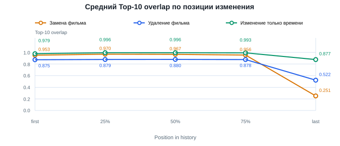
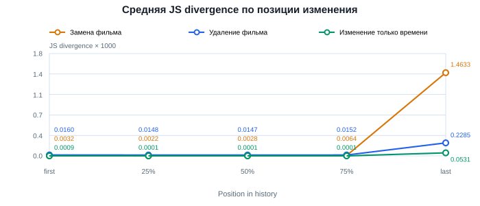
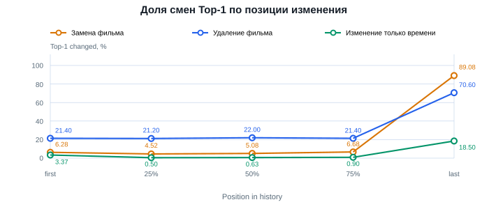

Замена фильма, удаление и изменение времени
Фиксированная маска; временные метрики усреднены по шести заданным сдвигам внутри пользователя. Замены усреднены по пяти повторениям. Ограниченные и нулевые сдвиги включены. На графиках показаны средние значения метрик.
Top-10 overlap

JS divergence × 1000

Top-1 changed, %
